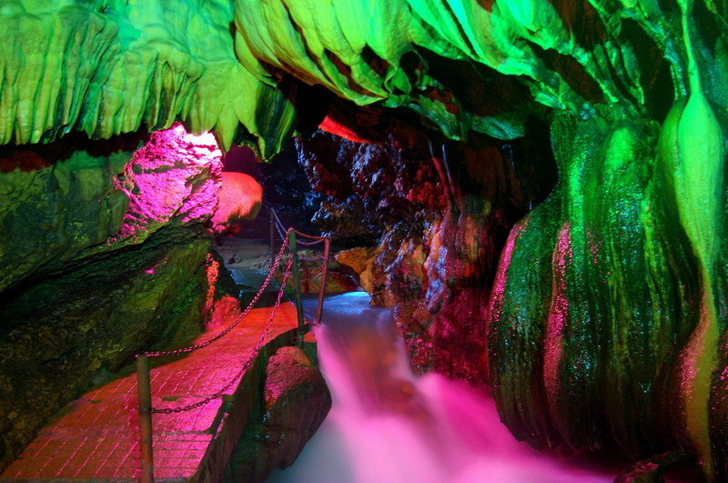

三生有幸，平湖万州
万州地处重庆市东北部、三峡库区腹心，因“万川毕汇”而得名，因“万商云集”而闻名，因“万客来游”而扬名。
重庆市万州区地处四川盆地东缘，重庆市东北边缘。自东汉设县至今已有1900多年历史。 北周设万川郡。唐、宋改郡设万州。明洪武六年改称万县。1935年设万县地区。 1992年设四川省万县市，辖8县3区，1998年改设重庆市万州区。现辖龙宝、天城、五桥3个移民开发区，14个街道办事处、32个镇、45个乡。 幅员面积3457平方公里。城市建成区面积23平方公里。2000年末总人口168万。 素有“川东门户”之称的万州，自古就是川东、渝东、鄂西、陕南、黔东北的物资集散中心和水陆交通枢纽。 千百年的沧桑变幻和劳动人民的艰苦 奋斗，使万州发展成为长江沿岸的十大港口城市之一、长江上游重要的工商业城市。 设立重庆直辖市后万州成为重庆市内仅次于重庆主城区的中心城市。 西部大开发战略的实施，长江经济带的形成， 特别是三峡工程库区大规模移民搬迁和开发建设，形成了巨大的投资市场、物资市场和消费市场，给万州带来了前所未有的发展机遇，使万州成为中外瞩目的投资热点地区， 为古老而年轻的万州发展注入了新的生机和活力。良好的区位优势和较好的物资基础，将有利于万州产业结构调整和生产力合理布局，实现经济超常规、跨越式发展。 168万州人民将高扬发展主旋律，力争通过5至10年的努力，把万州建设成为三峡库区最发达的交通运输网络中心， 最大的物资集散中心，最优的科教文卫金融信息中心，功能最完善的旅游服务中心，重庆市新兴的具有自身特色的工业基地和优质农产品基地， 经济发达、社会文明、环境优美、人民富裕的重庆市第二大城市。
这里是三 国时期大将军甘宁的故里， 经过专家测算，青龙瀑布高 64.5 米，宽 151 米，比著名的黄果树瀑布尚宽 19 米，是名副其实的亚洲之最， 瀑布面积达9739.5平方米，是重庆市级风景名胜区。该地区属于典型的喀斯特地貌，山石陡峭，森林茂密。
万州烤鱼是属于重庆特色传统名菜，属于渝派川菜系。 万州烤鱼把鱼剖洗净后平放在铁夹中，放在炉上用木炭烧烤，盛到专用铁盘中， 浇上用牛油、红油、白糖、花椒、辣椒等调味品炒出底料，放上西芹、豆芽等爽口菜。万州烤鱼主要发源于重庆巫溪。
重庆市万州区盐井乡盐井沟龙洞，古名石龙洞，洞内暗河涌流，钟乳嶙峋。石笋、石帘、石梯田形态万千，巧布其中。 洞中泉水每日有规律的涨落，终年不涸，故又称龙泉洞。洞内有12个滩滩滩各有其美妙之处。 现仍存有清光绪皇帝御笔亲书的“功宣朐忍”匾额。
